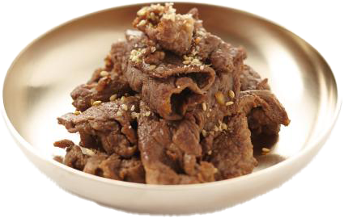

Bulgogi (Korean BBQ Beef)
불고기

National Institute of Korean Language, CC BY-SA 2.0 KR, via Wikimedia Commons
A recipe by
mykoreankitchen.com
Your comprehensive guide to making the most delicious bulgogi (Korean BBQ beef) at home! With this, you can make
mildly sweet, savory, smoky, juicy and tender delicious bulgogi. Are you excited?
Ingredients
Main
- 800 g rib eye (1.76 pounds) or top sirloin (or any tender prime beef cut), thinly sliced, 2mm to 3mm (1/8 inch)
thickness
- 1 onion (130 g / 4.6 ounces), optional, peeled & thinly sliced
- 2 stalks green onion (55 g / 2 ounces), optional, thinly sliced
- 1/2 carrot (55 g / 2 ounces), optional, peeled & thinly sliced
- 1 Tbsp toasted sesame oil
- 1 Tbsp toasted sesame seeds
- 1 Tbsp cooking oil (I used rice bran oil)
Bulgogi marinade
- 6 Tbsp soy sauce (I use regular Kikkoman soy sauce)
- 3 Tbsp brown sugar
- 2 Tbsp rice wine (mirin)
- 1 red apple or asian pear (155 g / 5.5 ounces)
- 1/2 onion (80 g / 2.8 ounces)
- 1 Tbsp minced garlic
- 1 tsp minced ginger
- 1/8 tsp ground black pepper
Instructions
- Blend the marinade ingredients in a mixer or food processor until smooth. Set aside.
- Marinate the meet
- Place the thinly sliced meat in a mixing bowl and pour the marinade over it. Mix them well together while
gently
massaging the meat with your hands. (Wearing a food prep glove is very handy here!)
-
Add the sesame oil and mix it into the meat. (I prefer adding the sesame oil separately as opposed to mixing
it in the marinade sauce. I read somewhere that the oil can prevent the other sauce getting absorbed
effectively into the meat.)
-
Cover the bowl with cling wrap (or move the marinated meat into a glass container with a lid) and marinate the
meat for at least 4 hours in the fridge. (If you have more time, you can also marinate it overnight to deepen
the flavour even more).
- Preheat a skillet / bbq grill on medium high heat until well heated. Add the cooking oil and spread it well.
Add the meat (and vegetables) and cook it on medium high to high heat for 3 to 5 mins (until the meat and
vegetables cook to your desired doneness). Toss in the sesame seeds and stir them quickly.
- Serve the bulgogi with steamed rice and other Korean side dishes.
{kind=link}